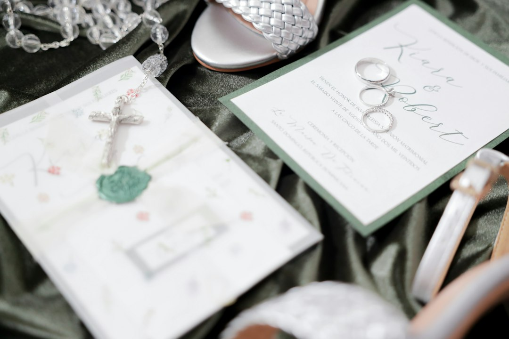

Riduzione di Sprechi e Costi con LOVE Partecipazioni Digitali per Wedding Planner e Agenzie Eventi

Ottimizzare i Processi nel Settore Wedding: Come LOVE Partecipazioni Digitali Riduce Sprechi di Tempo e Costi Operativi
- Le partecipazioni cartacee rappresentano un costo e un tempo di gestione eccessivi per wedding planner e agenzie eventi.
- La gestione manuale delle intolleranze alimentari causa errori e inefficienze operative.
- LOVE Partecipazioni Digitali offre un sistema integrato con apertura 3D, AI Monogram Studio e RSVP digitali con export dedicato per semplificare ogni fase.
Analisi Approfondita della Notizia e delle Implicazioni Operative
Nel panorama attuale dei servizi wedding, le modalità tradizionali di invio e gestione delle partecipazioni rappresentano una complessità operativa non più sostenibile. Il ricorso massiccio a materiali cartacei comporta non solo costi elevati di stampa e spedizione, ma anche uno spreco di tempo rilevante in fase di organizzazione e raccolta delle conferme di partecipazione. Inoltre, la gestione delle intolleranze alimentari e delle preferenze per il catering, spesso affidata a liste cartacee o messaggi dispersivi, apre la porta a errori e a potenziali disguidi durante l’evento. Questi fattori incidono negativamente sulla produttività di wedding planner e agenzie eventi, generando inefficienze e rischi operativi che possono minare la qualità dell’esperienza offerta ai clienti finali, cioè gli sposi.
Le Conseguenze e i Costi di Non Agire
Ignorare la trasformazione digitale nell’organizzazione delle partecipazioni e della gestione ospiti comporta un aumento sensibile dei costi fissi e variabili. Le partecipazioni cartacee, con i loro costi di progettazione grafica, stampa, spedizione e gestione dei rientri, sottraggono risorse preziose. Inoltre, l’incertezza e la imprecisione nella raccolta di informazioni fondamentali come le intolleranze alimentari possono sfociare in disservizi durante il catering, con conseguenti insoddisfazioni e potenziale danno reputazionale. Dal punto di vista operativo, l’emissione di documenti cartacei e la segnalazione manuale tramite telefonate o email rallentano i processi, aumentando il rischio di errori e sprechi di personale. La situazione si traduce in una complessità gestionale ingestibile su più eventi, portando inevitabilmente a riduzioni di margini e pressioni sulle risorse.
Come LOVE Partecipazioni Digitali Risolve il Problema
LOVE Partecipazioni Digitali è concepito per rivoluzionare la gestione degli inviti matrimoniali e la raccolta delle informazioni utili al catering, integrando tecnologie innovative e soluzioni user friendly. Grazie al sistema di partecipazioni digitali d’autore con apertura 3D, gli invitati vivono un’esperienza immersiva e coinvolgente senza alcun utilizzo di carta. Il Monogram Studio AI consente di personalizzare ogni partecipazione secondo l’estetica desiderata, mantenendo al tempo stesso una standardizzazione che snellisce tempi e costi di produzione. Inoltre, il modulo RSVP digitale gestisce con precisione ogni conferma e intolleranza, generando automaticamente report Excel dettagliati destinati allo chef e agli addetti al catering, garantendo così comunicazioni rapide e affidabili. Infine, la spedizione WhatsApp 1-Tap trasforma l’invio e il follow-up in operazioni immediate e tracciabili, senza bisogno di gestire liste cartacee o applicazioni terze poco integrate. L’offerta flessibile prevede una licenza Sposi a 149 € e un pannello Agency Hub B2B a 490 € per la gestione fino a 10 matrimoni, configurando un modello scalabile e adatto a qualsiasi dimensione di organizzazione.
| Aspetti | Gestione Tradizionale | Con LOVE Partecipazioni Digitali |
|---|---|---|
| Costi di stampa e spedizione | Alti e variabili in base ai materiali e alle quantità | Inesistenti o molto ridotti grazie al digitale |
| Tempi di raccolta RSVP | Lunghi e soggetti ad errori di comunicazione | Veloci, automatizzati e tracciati via WhatsApp 1-Tap |
| Gestione intolleranze e preferenze catering | Manuale, dispersiva e fonte di errori | Centralizzata, automatica con export Excel dedicato |
| Personalizzazione partecipazioni | Spesso limitata dalle capacità del fornitore | AI-driven con Monogram Studio per design su misura |
| Impatto ambientale | Alto, per via dell’uso di carta e spedizioni | Basso, soluzione sostenibile e digitale |
💡 Ti è stato utile questo approfondimento?
Condividilo con un collega o un amico del settore Wedding Planner, Agenzie Eventi e Sposi a cui potrebbe interessare!
FAQ
1. Quanto tempo si risparmia mediamente usando LOVE Partecipazioni Digitali rispetto al metodo cartaceo?
Si può risparmiare fino al 60% del tempo impiegato per la raccolta RSVP e la gestione delle intolleranze, grazie a processi automatizzati e notifiche digitali.
2. È complicato integrare LOVE Partecipazioni Digitali con i flussi di lavoro esistenti?
Assolutamente no. Il pannello Agency Hub è progettato per integrarsi facilmente con CRM e altre piattaforme di gestione eventi, offrendo interfacce intuitive e soluzioni tecnologiche smart.
3. Quali vantaggi offrono le partecipazioni digitali in termini di personalizzazione?
Grazie al Monogram Studio AI, è possibile creare design unici e su misura per ogni evento, elevando la qualità estetica e l’esperienza utente rispetto alle soluzioni tradizionali.
Inizia Subito
Licenza Sposi da €149 o Pannello Agency Hub B2B a €490 per 10 matrimoni.
Fonti Ufficiali e Risorse Esterne
Scopri l'Intelligenza Artificiale per la tua attività
Ottimizza i processi e aumenta le vendite con le soluzioni B2B di RM Studio.
Scopri LOVE Partecipazioni Digitali